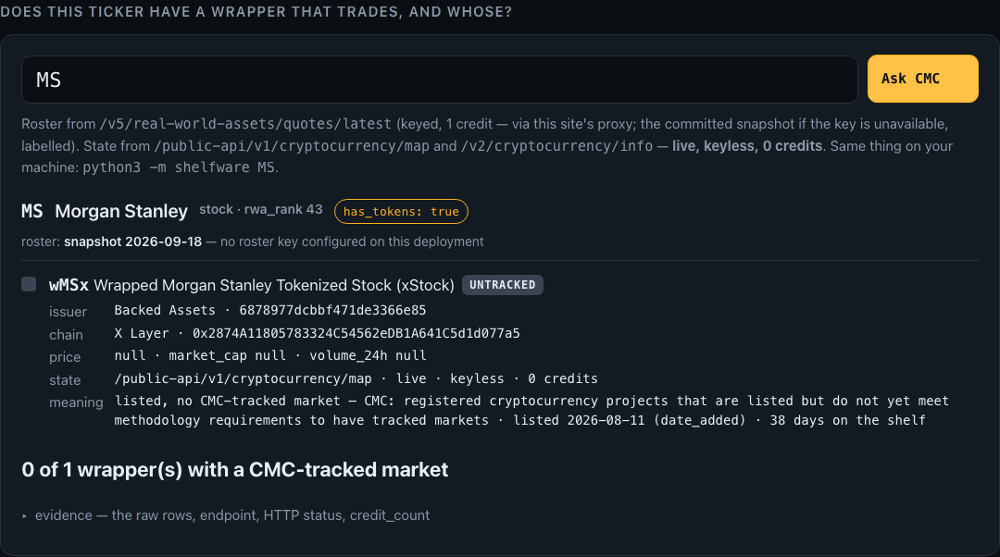
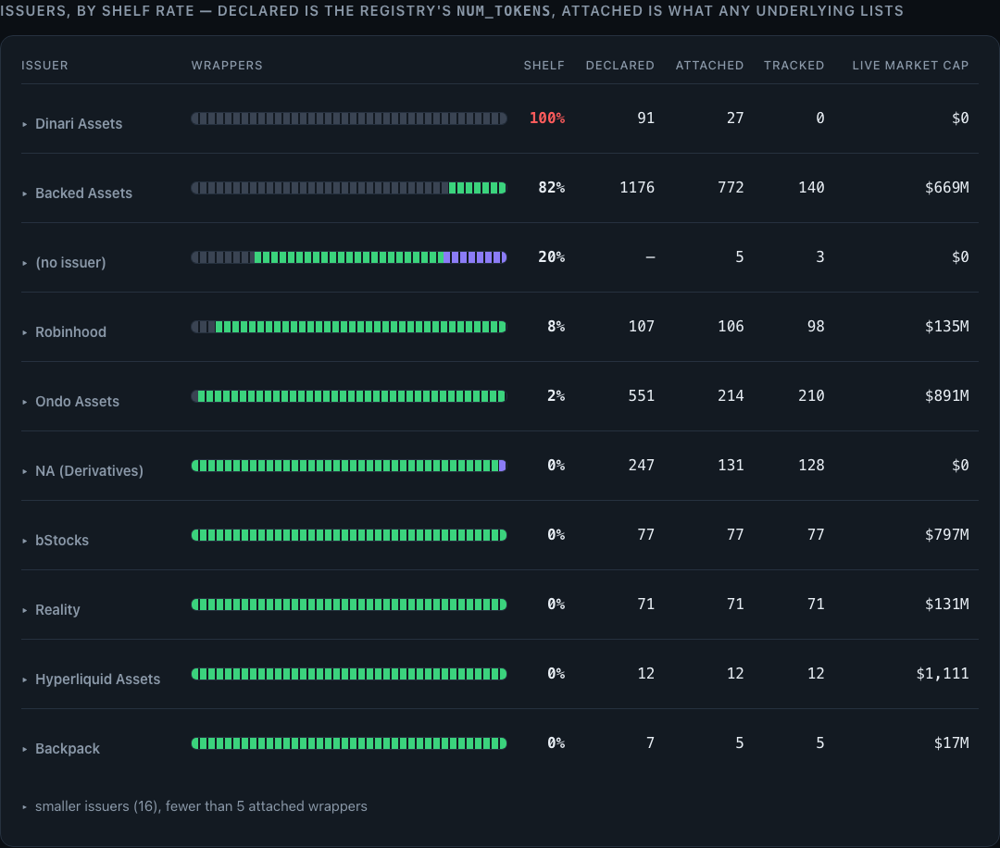

Shelfware
Six in ten tokenised stocks on CoinMarketCap have no wrapper with a tracked market.
476 of 791 underlyings flagged has_tokens: true · 2026-09-18 22:16 UTC · 5 keyed credits · a count, not a model
of the tokenised assets CoinMarketCap lists have no wrapper with a CMC-tracked market.
A boolean is not a market
An allocator vetting an issuer's catalogue opens CoinMarketCap's RWA page for Morgan Stanley. It says tokenised. Which wrapper? Does it trade? Whose is it? Same API, next endpoint over — a different answer.
{
"symbol": "MS",
"name": "Morgan Stanley",
"asset_type": "stock",
"rwa_rank": 43,
"has_tokens": true
}
{
"symbol": "wMSx",
"issuer_name": "Backed Assets",
"price": null,
"market_cap": null,
"status": "untracked"
}
Type MS. Get the receipt.

$ git clone https://github.com/edycutjong/shelfware.git $ python3 -m shelfware MS MS Morgan Stanley · stock · rwa_rank 43 · has_tokens: true roster: snapshot 2026-09-18T22:16:17Z (the RWA endpoints need a key) wMSx Wrapped Morgan Stanley Tokenized Stock (xStock) issuer Backed Assets chain X Layer 0x2874A11805783324C54562eDB1A641C5d1d077a5 price null · market_cap null · volume_24h null status UNTRACKED ← /public-api/v1/cryptocurrency/map live · keyless · 0 credits "listed, no CMC-tracked market" — CMC listed 2026-08-11 (date_added) · 38 days on the shelf 0 of 1 wrapper(s) with a CMC-tracked market receipt: cmc/map symbol=wMSx → HTTP 200 · keyless · 0 credits to any key · 491 ms · sha256 d7e1ecdef293e6c8
Four ledgers, one join, three rules
underlyings flagged has_tokens: true whose every wrapper is untracked · stocks alone 437 of 689 (63%)
673
$ jq '.wrappers | group_by(.rwa_id) | map(select(all(.[]; .status=="untracked"))) | length' data/census.json
476
strict rule: an id on no public CMC surface (4 today) is shown, never counted · price == null ⇔ status == untracked held with zero exceptions
Issuers, graded by their shelf

7 of 8 wrapper(s) with a CMC-tracked market ▾ evidence — the raw rows, endpoint, HTTP status, credit_count /api/status → /public-api/v1/cryptocurrency/map?listing_status=active,inactive,untracked &symbol=NVDAX,WNVDAX,NVDAon,NVDA,NVDAB,rNVDA,NVDA → HTTP 200 · keyless · 0 credits tokens[] entries — /v5/real-world-assets/quotes/latest { "crypto_id": 28616, "symbol": "NVDA.D", "issuer_name": "Dinari Assets", "price": null, "market_cap": null, "status": "untracked" }
- 1Dinari: 27 of 27 on the shelf, $0 live
- 2Backed: 632 of 772 (82%) beside $669M live
- 3bStocks: 0 of 77 — every wrapper trades, $797M
- 4NVDA: 7 of 8 tracked; Dinari's is the one on the shelf — raw rows shown
demo video: see BUIDL · NVDA for a mixed case (7 of 8 tracked; Dinari's is not), GILD or PLD for more shelf, GOLD for a commodity that trades
Six endpoints. One join.
| Endpoint | Leg | Access | What only it carries |
|---|---|---|---|
/v5/real-world-assets/map | universe | keyed · 0 credits | 791 underlyings flagged has_tokens — the claim |
/v5/real-world-assets/quotes/latest | roster | keyed · 1 / 250 assets | tokens[] with issuer_id and the price: null rows the RWA pages hide |
/v5/real-world-assets/issuers/list | registry | keyed · 1 credit | declared num_tokens — Backed declares 1176, attaches 772 |
/v1/cryptocurrency/map · listing_status=active,inactive,untracked | state | keyless · 0 credits | the only place a wrapper's tracked / untracked status lives |
/v2/cryptocurrency/info | date | keyless · 0 credits | date_added → days on the shelf; state for the 38 dotted symbols the map filter rejects |
/v1/key/info | receipt | keyed · 0 credits | credits used before and after — equals Σ credit_count over the run |
/v5/real-world-assets/market-pairs/list | — | 403 error 1006 on Startup | documented as Basic; tried, plan-gated, recorded in FEEDBACK.md §3 — not built on |
Delete CoinMarketCap and both ledgers vanish: no other source lists the wrapper roster with its nulls, or the listing state that explains them. 12 dated findings for the CMC team are in FEEDBACK.md.
40.9 seconds, 5 credits, 121 tests
1. /v5/real-world-assets/map 7,811 underlyings · 791 has_tokens 2. /v5/real-world-assets/quotes/latest 1,435 wrappers 3. /v5/real-world-assets/issuers/list 25 issuers 4. /public-api/v1/cryptocurrency/map 38,682 rows keyless 5. /public-api/v2/cryptocurrency/info date_added for the shelf wrappers untracked 673 of 1,435 underlyings, every wrapper untracked 476 of 791 → 60% what trades is young median 80 d · p90 380 (n=757) 40.9 s · 39 keyed calls = 5 credits · 15 keyless calls = 0 credits to any key /v1/key/info before → after: 12020 → 12025 wrote docs/proof/live_run.json
They count what trades
Issuer concentration by market cap — its own page sets aside "almost half the tokens" that report none. That half is ours.
Fair price and wrapper spread. Its pipeline runs presence → unit → liquidity first, so a null-price wrapper is excluded at step one.
A research explorer ranked by price and market cap — a wrapper priced null cannot enter a ranking.
Twenty endpoints, one issuer view of what was issued. No listing state, so no shelf.
An LLM agent labelling venue concentration of wrappers that trade. Shelfware has no model in it.
673 null-price rows, counted; 476 underlyings with no market; every issuer graded by its shelf beside its live cap.
Same universe, opposite halves of the roster.
What the number does not say
The word is CoinMarketCap's
"untracked" means listed, no CMC-tracked market — not that nothing ever traded anywhere. Dinari dShares trade on Dinari's own venue. Every surface prints CMC's definition beside the state.
The roster leg needs a key
The RWA family refuses keyless calls (403 error 1005). With no key the roster is a dated snapshot, labelled; the state leg is live regardless. The census refuses to run without a key rather than replay.
Dotted symbols, two sources
The map's symbol filter rejects CMC's own NVDA.D — 38 wrappers. Those take a coarser state from /v2/cryptocurrency/info and the finer word from the snapshot; each row names both. Filed in FEEDBACK.md.
A young series, 4 unresolved ids
Daily snapshots since 2026-09-18; the delta panel shows what flipped. 4 wrapper ids resolve on no public CMC surface — shown in their own bucket, counted nowhere.
Clone it.
Type a ticker.
A boolean says tokenised.
The join says whether it trades.